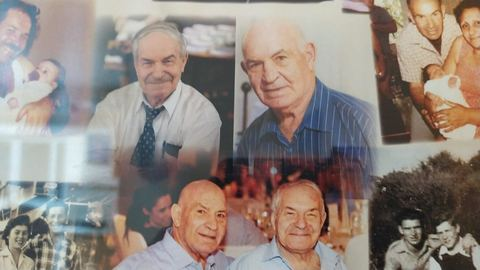

Edmund Blau
1894–1942
Life events
| Born | |
|---|---|
| Lived | 22 Jul 1929 · 1200 Rauscherstrasse 6, Apt. 23, Vienna, Austria Map · per marriage record |
| Married | 24 Jul 1929 · Juliana Oszman · Stadttempel, 1010, Seitenstettengasse 4, Vienna, Austria Map |
| Lived | |
| Nazi Persecution | 16 May 1938 · 1200 Friedrich-Engels-Platz 9-16-18, Vienna, Austria Map · per Nazi records.    |
| Lived | 30 Jun 1938 · 1200 Friedrich-Engels-Platz 9-16-18, Vienna, Austria Map · Evicted by Nazis. Nazi eviction from apartment information: surname: Blau, first name: Edmund, sex: male, date of birth: 1894-01-08, birthplace: Vienna, native country: Austria, termination date: 1938-06-18, date of eviction: 1938-06-30, district: 1200, street: Friedrich-Engels-Platz, street number: 9, notice Juli Blau, born 4.2.1901 in Steinamanger, gave up the flat on behalf of her husband. DOEW id: XX O 128/38 HM, date of deportation: 1942-08-28, place of deportation: Auschwitz, country of deportation: Poland
12/8/24 - I CANNOT find where I found this reference on the DOEW website!  |
| Lived | |
| Emigrated | about 8 Aug 1938 · Brussels, Brussels (Bruxelles), Belgium Map · per Austrian records obtained in the 1990s. |
| Deportation | |
| Died | 31 Aug 1942 · Auschwitz Death Camp, Oswiecim, Malopolskie, Poland Map · Murdered by Nazis in the Holocaust. On 31/08/1942 Transport 25 Train 901-20 arrived at Auschwitz Birkenau. Only 71 women were selected for slave labour. The remainder of the souls were murdered by gas immediately upon arrival at Auschwitz. |
Family

Juliana Oszman1901–1944
Children

Walter Blau1930–2023 Oscar Blau1934–2026
Oscar Blau1934–2026
Photos

Edmund Blau

Edmund Blau

Edmund Blau

Anna Maria Schepan
Teresa Feldman
Josef Blau
Betti Borbola Fuchs
Samuel Blau
Ilonka 'Helen' Blau
+13 more
Richard Blau
Edmund Blau
Juliana Oszman

Edmund Blau

Edmund Blau

Oscar Blau
Walter Blau
Edmund Blau
Juliana Oszman
Edmund Blau
Edmund Blau
Edmund Blau
Oscar Blau
Walter Blau
Edmund Blau
Juliana Oszman
Edmund Blau
Edmund Blau
Edmund Blau

Edmund Blau
Edmund Blau
Edmund Blau

Edmund Blau